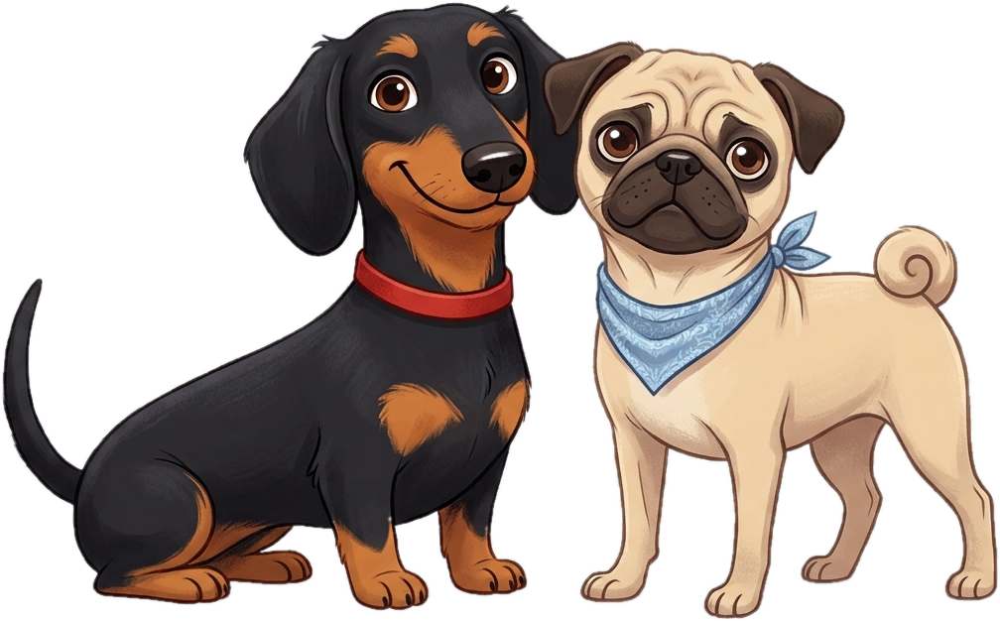

Pensado para ti y tu mascota

Lugares donde tu mascota también es bienvenida
Cafés, parques, playas y hoteles de Chile que aceptan mascotas. Marcamos los que tienen un espacio para que hagan pis y caca.
 Gratis
Gratis- Con espacio para necesidades
- De Arica a Punta Arenas
Para empezar
Antes de salir con tu mascota
Lleva bolsas, agua y correa. Revisa siempre las reglas del lugar: cada uno puede cambiar sus condiciones.
Explora a tu ritmo
Busca por nombre o comuna y filtra por tipo de lugar.
Servicios
Dónde puedes viajar con tu mascota y qué condiciones piden. Las reglas cambian: confirma siempre en el sitio oficial.
Transporte
Eventos y juntas
Corridas familiares con perros, ferias de adopción y encuentros. Haz clic en un evento para ver dónde es.
Sugiere un evento
¿Conoces una junta o corrida que no está aquí? Cuéntanos y la revisamos.
Consejos rápidos
 Recoge siempre las deposiciones y llévalas a un basurero.
Recoge siempre las deposiciones y llévalas a un basurero.- Lleva agua, sobre todo en verano.
 Llama antes para confirmar que siguen aceptando mascotas.
Llama antes para confirmar que siguen aceptando mascotas.